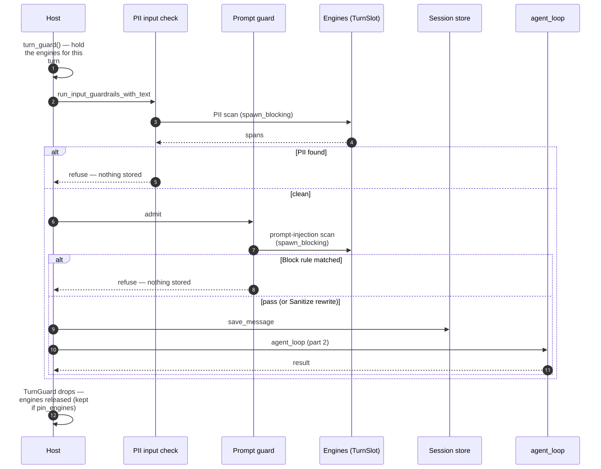
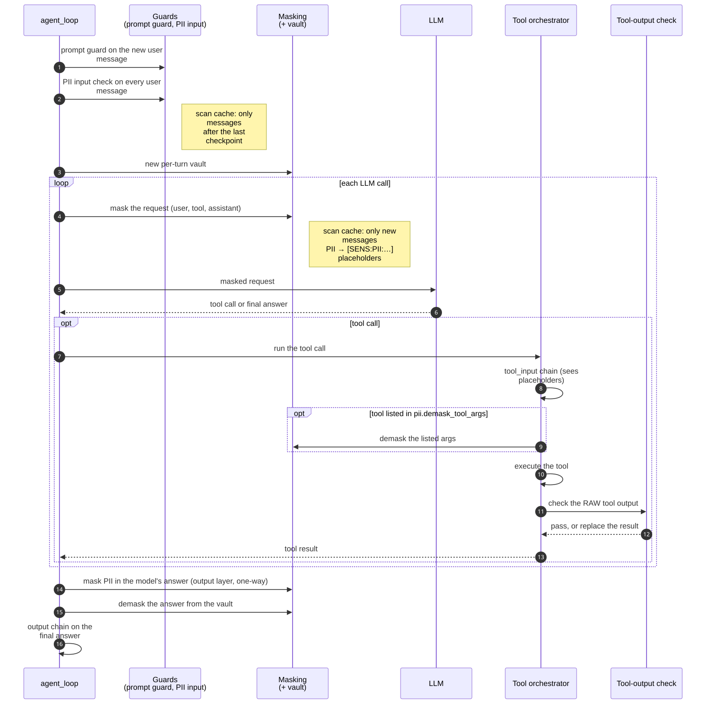

ARGO guardrails 구조 (UML)
1. 컴포넌트 (층 구조)
위에서 아래로 갈수록 바닥에 가까운 층입니다. 화살표는 "위가 아래를 쓴다"는 뜻이고, 주요 의존만 남겼습니다.
- ① 호스트(tinicli, gateway)는 ② 세 진입점으로만 들어옵니다: 부팅 때 한 번 부르는
install_guardrails_from_config, 메시지를 저장하기 전의 gate, 턴마다 도는agent_loop. - ③
agent층이 한 턴에서 실제로 돕니다: 네 chain을 담은GuardrailSet, 마스킹과 vault, prompt guard, 이미 스캔한 메시지를 건너뛰는 scan cache. 설치는 이 중 GuardrailSet의 input·tool_output chain과 SensitiveMasking을 채웁니다. - ④
sensitive의SensitiveGuardrail과DetectorChain이 ⑤ 규칙 묶음(PII, prompt injection)의 detector를 chain으로 묶어 가드레일과 마스킹에 넘깁니다. - ⑥ 엔진(
PatternEngine,PatternFilter)은 도메인을 모르며 항상 컴파일됩니다. 엔진은TurnSlot에 들어 있어 턴마다 한 번 빌드되거나,pin_engines면 상주합니다. - trait(
SensitiveDetector, guardrail trait 4개,PromptGuardConfig)은 tinicore-traits에 있으며 3장의 클래스 그림에 나옵니다.

2. 한 턴의 시퀀스
PII full, tool output 검사와 prompt guard를 켜고 pin_engines는 끈 상태(tinicli 기본값)입니다. 한 장에 담으면 너무 넓어서 두 장으로 나눴습니다.
2a. 저장 전 gate (호스트)
- 호스트가 먼저
turn_guard()로 이번 턴 동안 엔진을 붙잡습니다. - PII 입력 검사를 먼저 하고, 걸리면 prompt guard(
admit)는 부르지 않고 바로 거절합니다. 통과하면 prompt guard를 보고, Block 규칙에 걸리면 거절합니다. 거절하면 아무것도 저장하지 않습니다. - 통과하면 메시지를 저장하고
agent_loop(2b)를 부릅니다. 호스트의 TurnGuard가 놓일 때 엔진이 해제됩니다(pin_engines면 상주).

2b. agent_loop 안
- 새 사용자 메시지에 prompt guard를 다시 돌리고, 모든 사용자 메시지에 PII 입력 검사를 합니다(scan cache로 새 메시지만 스캔).
- LLM을 부를 때마다 요청(user·tool·assistant)을 마스킹합니다. PII는
[SENS:PII:…]placeholder가 되고 원래 값은 턴의 vault에 둡니다. - 도구 호출에서는 tool_input chain이 placeholder가 든 인자를 보고,
pii.demask_tool_args에 적힌 인자만 실제 값으로 되돌린 뒤 도구를 실행합니다. 도구의 원본 출력은 tool-output 검사(prompt injection)를 거칩니다. - 마지막에 모델의 답에서 PII를 한 방향으로 가리고(output layer), vault로 placeholder를 되돌려 최종 답을 만듭니다.
- 모든 스캔은
spawn_blocking에서 돕니다.

3. 클래스 (타입과 trait)
Rust에는 상속이 없으므로 struct와 trait 구현 관계로 그렸습니다. 필드와 메서드는 구조를 이해하는 데 필요한 것만 적었습니다.
3a. 엔진과 규칙 묶음
PatternEngine은 DFA chunk 엔진과 hand-written detector들(MatchEngine 구현체)을 담고, PatternFilter는 TurnSlot을 통해 그 엔진을 얻어 layer나 rule id로 결과를 좁힙니다. PII와 prompt injection의 detector는 tinicore-traits의 SensitiveDetector를 구현합니다.

3b. 가드레일 틀, 마스킹, 캐시, 설치
GuardrailSet의 네 chain은 tinicore-traits의 guardrail trait 목록이고, SensitiveGuardrail이 detector chain을 네 trait 모두에 맞춰 줍니다. 마스킹은 SensitiveMasking 정책과 턴마다 생기는 TurnMaskingState(vault)로 나뉩니다.